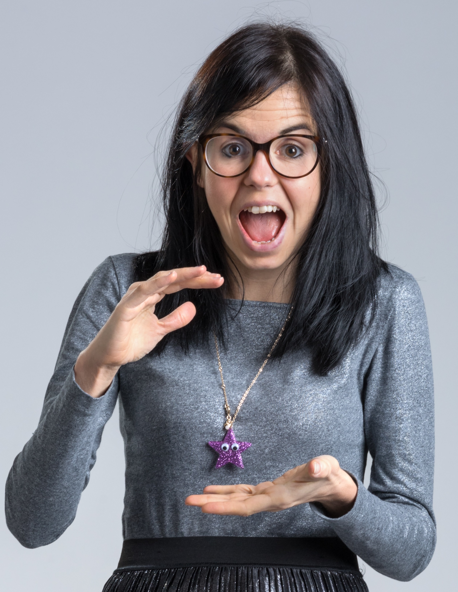

Registration
FAQs
Registration
FAQs
So far we have 6 speakers confirmed for the Postgraduate Women in Physics Conference. This page contains a short bio about their careers and experiences as Women in Physics.
Dr Jess WadeI am an early career researcher in the Blackett Laboratory at Imperial College London. Myresearch investigates polymer-based light emitting diodes. I also carry out public engagement work in STEM, particularly in the promotion of physics to girls. In 2017, I won the Institute of Materials, Minerals and Mining Robin Perrin Award for Materials Science and in 2018 I won the Institute of Physics Daphne Jackson Medal and Prize. |
 | |
Professor Helen GleesonI am currently Head of School of Physics and Astronomy at Leeds and am very involved in activities that promote the uptake of science and engineering by women and other minorities. I work within my institution and nationally in this area and was awarded my OBE for these activities in 2009. My research concerns self-ordering and self-assembling materials, particularly liquid crystal phases. I'm an experimentalist and use a variety of approaches to understand liquid crystal structures. An important part of my research is to understand how liquid crystals can be used for non-display applications, leading to the invention of switchable contact lenses in which the voltage-induced change in refractive index of the liquid crystal lens element causes a change in focus, equivalent to putting on reading glasses. |
||
Dr Camilla Schelpe I am currently Senior Scientist at GAM Systematic | Cantab
|

|
|
Dr Emma BradshawI'm currently the social media executive for BBC One, having previously managed the social media and built the websites for the British Royal Family, BBC Two and BBC Stargazing. For my undergraduate degree I did a Masters in Physics with Astronomy at the University of Nottingham. I also studied for my PhD (and 1.5 years post-doc) at Nottingham under Prof. Omar Almaini on AGN at redshifts 1-1.5. Although I don't directly use my PhD any more, my studies were integral to me getting my job at the BBC, and also helps with the millions and millions of pieces of statistics that my team processes every week. My favourite galaxy is the penguin galaxy. |
||
Dr Susha ParameswaranI am a Lecturer in Theoretical Physics at University of Liverpool, doing research at the interface between String Theory, Cosmology and Particle Physics. I completed my PhD in 2005 at University of Cambridge, and then enjoyed several years as an itinerant postdoc, spending time in Trieste, Hamburg, Uppsala (where my daughter was born) and Hannover (where my son was born), before arriving in Liverpool with a European Marie Curie Fellowship. My work is focussed on how the ideas emerging from string theory may be able to help us to address long-standing fundamental problems in high energy physics and cosmology, such as the nature of the Dark Energy which dominates our Universe today. |
||
Dr Devasuda AnblaganI completed my BSc and PhD in Physics at the University of Nottingham. My PhD focused on studying the effect of the uterine environment on foetal development, and investigating the factors that confer risk and resilience for injury that occur during early development. In 2012, on completion of my PhD, I joined the University of Edinburgh to continue my research in MRI, including studying the effects of drug abuse and stress on foetal brain growth, and exploring the microstructural changes in the brain that accompany preterm birth. In September 2017, I joined the NHS Management Training Scheme to train as a finance manager, and have worked at Cambridge University Hospital, Hertfordshire Community NHS Trust, PwC and the System Delivery Unit of the Cambridgeshire and Peterborough Sustainability Transformation Partnership. In my talk, I will discuss the reasons for moving from medical research to the NHS, including my desire to have a more direct impact on healthcare, and to better understand the funding models and healthcare agenda. |
||
@pgwipnotts
pgwipnotts@gmail.com